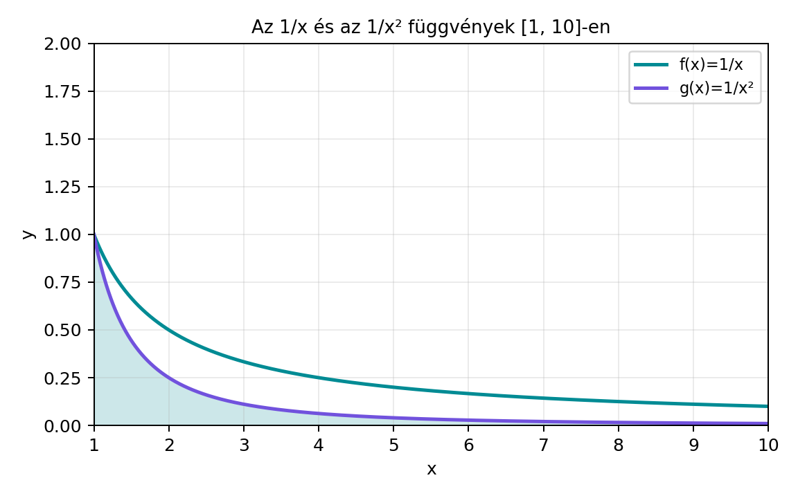

A Riemann-integrált véges
intervallumon és korlátos függvényre értelmeztük. A gyakorlatban azonban
sok kérdésben végtelen hosszú intervallum vagy nem korlátos függvény
jelenik meg: mekkora munkát kell végeznünk, hogy egy űrszondát a Föld
gravitációs teréből végtelen távolra emeljünk? Mennyi sugárzást bocsát
ki összesen egy radioaktív minta a teljes jövőben? Mekkora a terület az
grafikonja alatt az
félegyenesen? Ezekre a Riemann-integrál eredeti definíciója nem
alkalmazható, ezért a határozott integrál fogalmát határértékkel
terjesztjük ki. Az így kapott objektumot improprius
integrálnak (improper integral) nevezzük.
16.2.2 Szemléletes kép
Az alábbi ábra az
és a
függvényeket mutatja az
intervallumon. Első pillantásra a két görbe hasonlónak tűnik: mindkettő
nullához tart, ha
.
Mégis alapvető különbség van köztük: az
alatti terület az
félegyenesen véges (éppen
),
míg az
alatti terület ugyanezen a félegyenesen végtelen. Az improprius integrál
ezt a jelenséget teszi pontossá.

Az 1/x és az 1/x² függvények (1, 10)-en -
Az 1/x² alatti terület az (1, ∞) félegyenesen véges (értéke 1), az 1/x
alatti terület ugyanott végtelen; az ábra az (1, 10) szakaszt mutatja, a
satírozás ∫₁¹⁰ 1/x² dx = 0,9.
Az ábrán a satírozott rész a
közelítő területét jelöli; ha a felső határt
helyett
-re
írjuk, és
,
a terület az
értékhez tart. Az
alatti terület viszont minden határon túl nő.
Az alábbi ábra ezt a határátmenetet mutatja: a jobb panelen az
értéke látszik a felső határ függvényében,
és
esetén vízszintes aszimptotához
()
tart,
esetén
()
korlátlanul nő.
Statikus változat (mint a PDF-ben)
Az
terület
növelésével:
-re
korlátos és
-hez
tart,
-re
16.2.3 Definíciók
Először a végtelen intervallumon vett improprius integrált
definiáljuk.
Definíció (végtelen intervallum). Legyen
folytonos az
intervallumon. A
improprius integrál
konvergens, ha a
határérték létezik és véges; ekkor az
integrál értéke ez a határérték. Ha a határérték nem létezik, vagy
végtelen, az integrál divergens. Hasonlóan definiáljuk
a
integrált a
határértékkel.
A
integrál konvergens, ha van olyan
,
hogy mind
,
mind
konvergens; ekkor
A
választása nem befolyásolja az eredményt, ha mindkét oldal
konvergens.
Definíció (nem korlátos integrandus). Legyen
folytonos az
intervallumon, de
.
Az
improprius integrál
konvergens, ha a
határérték létezik és véges. Hasonlóan,
ha
az
intervallumon folytonos, de
,
akkor a
határértéket vizsgáljuk.
Ha a szingularitás az intervallum belsejében van, például
és
,
akkor az integrált két részre bontjuk:
és az integrál csak akkor konvergens,
ha mindkét jobb oldali improprius integrál konvergens.
Megjegyzés (Cauchy-főérték). Előfordul, hogy a
kétoldali szingularitás miatt az improprius integrál nem létezik, de a
szimmetrikus határérték igen. Például a
bár az
improprius integrál a fenti definíció szerint nem konvergens, mert a
divergens. Ezt a szimmetrikus határértéket
Cauchy-főértéknek nevezzük, és
-vel
jelöljük. A Cauchy-főérték létezése nem jelenti az improprius integrál
konvergenciáját; a könyvben az improprius integrált mindig a definíció
szerinti határértékként értjük.
16.2.4 Kidolgozott példák
Példa (exponenciális lecsengés). Számítsuk ki az
integrált.
Megoldás. A definíció szerint
A primitív függvény
,
ezért
Mivel
,
a határérték
.
Tehát
Ez a példa jól mutatja, hogy egy
végtelen hosszú intervallumon vett terület lehet véges.
Példa (a
-integrál
a végtelenben). Döntsük el, hogy az
integrál mely
értékekre konvergens, és adjuk meg az értékét, ha konvergens.
Megoldás. Először
esetén vizsgáljuk. A primitív függvény
Így
A
határérték viselkedése az
kitevő előjelétől függ:
Ha
,
akkor
,
ezért
.
Ekkor
Ha
,
akkor
,
ezért
,
tehát az integrál divergens.
A
esetet külön kezeljük:
és
,
tehát az integrál divergens.
Összefoglalva:
és konvergencia esetén az értéke
.
Példa (a
-integrál
a nulla körül). Döntsük el, hogy az
integrál mely
értékekre konvergens.
Megoldás. A függvénynek
-ban
szingularitása van. A definíció szerint
esetén
- Ha
,
akkor
,
ezért
,
és az integrál konvergens, értéke
- Ha
,
akkor
,
ezért
,
tehát az integrál divergens.
A
esetben
és
,
ha
,
tehát az integrál divergens.
Összefoglalva:
és konvergencia esetén az értéke
.
Ellenpélda (a nullához tartó függvény nem elég).
Sokan azt gondolják, hogy ha
,
akkor az
integrál konvergens. Az
példa éppen ezt cáfolja:
,
de az
divergens. A nullához tartás tehát szükséges feltétel lehet, de nem
elégséges: a függvénynek „elég gyorsan” kell csökkennie.
Sokszor az integrandus primitív függvényét nem tudjuk zárt alakban
megadni, de a konvergenciát akkor is el tudjuk dönteni, ha a függvényt
egy ismert viselkedésű függvénnyel hasonlítjuk össze.
Tétel (összehasonlító kritérium). Legyenek
és
folytonos függvények az
intervallumon, és tegyük fel, hogy
minden
esetén.
Ha
konvergens, akkor
is konvergens, és
Ha
divergens, akkor
is divergens.
Ha az egyenlőtlenség csak egy
küszöbtől teljesül, a konvergenciára vonatkozó állítások változatlanok,
mert
véges Riemann-integrál; az értékekre vonatkozó becslés ekkor csak
alakban igaz. (Például
,
:
pontosan
-re,
de
.)
Bizonyítás. Legyen
Mivel
,
az
függvény monoton növekvő
-ben.
Továbbá
miatt
ahol az utolsó egyenlőtlenség azért
igaz, mert
,
így az integrálja
-ben
monoton növekvő, és a konvergens improprius integrál a felső korlátja.
Tehát
felülről korlátos. A monoton növekvő, felülről korlátos függvénynek
létezik véges határértéke
esetén, így
konvergens, és a fenti egyenlőtlenségből adódik az értékek közötti
reláció is. Küszöb esetén alkalmazzuk az érvelést
-en,
és adjuk hozzá a véges
integrált.
A második állítás az első kontrapozíciója: ha
divergens, akkor
nem lehet konvergens, mert akkor az első állítás szerint
is konvergens lenne. ∎
A kritérium nemnegatív függvényekre érvényes; ha az integrandus
előjelet vált, akkor először az abszolút értékét vizsgáljuk.
Tétel (határérték-összehasonlító kritérium).
Legyenek
és
folytonos, nemnegatív függvények az
intervallumon, és tegyük fel, hogy
létezik, és
.
Ekkor
és
egyszerre konvergens vagy egyszerre divergens.
Bizonyítás. Mivel
,
válasszunk olyan
küszöböt, hogy minden
esetén
Ebből
Ha
konvergens, akkor az első egyenlőtlenség és az összehasonlító kritérium
szerint
is konvergens. Ha
konvergens, akkor a második egyenlőtlenségből
konvergens. Tehát a két integrál egyszerre konvergens; divergencia
esetén ugyanez a gondolatmenet kontrapozícióval adódik. ∎
Definíció (abszolút konvergencia). Az
integrál abszolút konvergens, ha az
integrál konvergens.
Tétel (abszolút konvergencia ⇒ konvergencia). Ha
konvergens, akkor
is konvergens.
Bizonyítás. Definiáljuk a függvény pozitív és
negatív részét:
Ekkor
és
.
Mivel
és
,
az összehasonlító kritérium szerint
és
is konvergens, hiszen
konvergens. Így
két konvergens integrál különbsége,
tehát szintén konvergens. ∎
A megfordítás nem igaz: van olyan integrál, amely konvergens, de nem
abszolút konvergens. Erre a legfontosabb példa a következő.
16.2.6 A
integrál konvergenciája
A
úgynevezett
Dirichlet-integrál konvergens, de nem abszolút
konvergens. Ennek az integrálnak a pontos értéke
,
amit komplex analízissel a Valós integrálok
kiszámítása reziduumokkal alfejezetben számítunk ki. Itt most csak a
konvergenciát és a nem abszolút konvergenciát igazoljuk.
Konvergencia. Az
körüli rész nem okoz gondot, mert
így a függvény folytonosan
kiterjeszthető
-ban,
tehát a
közönséges Riemann-integrál, és véges. Ezért elég az
vizsgálata.
Legyen
.
Alkalmazzunk parciális integrálást az
és
választással; ekkor
és
.
Így
A kiintegrált rész:
Mivel
,
a
tag nullához tart, ha
.
A maradék integrál abszolút konvergens, mert
és
konvergens. Ezért
-nek
létezik véges határértéke. Következésképpen a
is létezik, tehát az integrál konvergens.
Nem abszolút konvergencia. Megmutatjuk, hogy
Mivel
,
teljesül, hogy
Ezért
Az
integrál divergens, hiszen
.
Az
viszont konvergens, amit a fenti parciális integráláshoz hasonlóan
igazolhatunk:
,
,
ekkor
,
és a kiintegrált rész nullához tart, a maradék
abszolút konvergens. Így a jobb oldal egy divergens és egy konvergens
integrál különbsége, tehát divergens. Az összehasonlító kritérium
szerint ezért
is divergens.
Összefoglalva: a Dirichlet-integrál konvergens, de nem abszolút
konvergens.
Továbbvitt eredmény. A Dirichlet-integrál
konvergenciáját és nem abszolút konvergenciáját a Valós integrálok kiszámítása reziduumokkal
alfejezet használja fel, ahol az integrál pontos értékét
-nek
számítjuk ki.
16.2.7 Számolási recept
Az improprius integrál vizsgálatához a következő lépéseket
követhetjük:
Azonosítsd a szingularitásokat: végtelen
intervallumhatárok és/vagy olyan pontok, ahol a függvény nem
korlátos.
Bontsd fel az integrált olyan részekre, amelyekben
már csak egyetlen szingularitás van. Minden részt külön kell vizsgálni;
ha bármelyik rész divergens, az egész integrál divergens.
Számítsd ki minden részre a megfelelő határértéket
a primitív függvény segítségével:
illetve nem korlátos végpontnál a
végponthoz tartó határértékkel.
Ellenőrizd a határértéket: ha véges, az a rész
konvergens; ha nem létezik vagy végtelen, akkor divergens.
Ha az integrandus előjelet vált, először vizsgáld
az abszolút konvergenciát; ha
konvergens, akkor
is az. Ha az abszolút konvergencia nem dönthető el, használj parciális
integrálást vagy más kritériumot (például Dirichlet-kritériumot, amelyet
a Valós integrálok kiszámítása reziduumokkal
alfejezetben használunk majd).
16.2.8 Valós életbeli
alkalmazás
16.2.8.1 Szökési sebesség
A Föld felszínétől
távolságra lévő,
tömegű testre ható gravitációs erő nagysága Newton gravitációs törvénye
szerint
ahol
a gravitációs állandó,
a Föld tömege, és
a test távolsága a Föld középpontjától. Jelölje
a Föld sugarát.
Azt a munkát keressük, amely ahhoz kell, hogy a testet a felszínről
()
végtelen távolra emeljük. Mivel az erő az elmozdulással ellentétes
irányú, a munka
Ez egy végtelen intervallumon vett
improprius integrál. A primitív függvény
ezért
A kapott munka véges, annak ellenére,
hogy a testet végtelen távolra visszük, mert a gravitációs erő elég
gyorsan csökken.
Ha a testnek a felszínen
sebességet adunk, akkor a kezdeti mozgási energia
.
A szökési sebesség az a minimális sebesség, amelynél a mozgási energia
fedezi a végtelen távolságra jutáshoz szükséges munkát:
amiből
Behelyettesítve:
Ez az ismert földi szökési sebesség. A
modell elhanyagolja a légellenállást, a Föld forgását és más égitestek
hatását, de jól mutatja, hogy az improprius integrál természetes eszköz
a végtelen távolságra vonatkozó fizikai kérdésekben.
16.2.8.2 Radioaktív hulladék összes
sugárzása
Egy radioaktív minta aktivitása (időegység alatt bekövetkező bomlások
száma) exponenciálisan csökken:
ahol
a kezdeti aktivitás,
pedig a bomlási állandó. A teljes idő alatt kibocsátott összes bomlások
száma
A primitív függvény
,
ezért
Mivel a felezési idő
,
az eredmény
Például ha
és a felezési idő
,
akkor az összes bomlás
Ez a szám mutatja, hogy a radioaktív
hulladék nagyon hosszú idő alatt, de összességében véges számú bomlást
produkál; az improprius integrál a teljes sugárzási dózis becslésének
alapja.
16.2.9 Tipikus hibák
„Ha
,
akkor az integrál konvergens.” Ez hamis. Az
esetben
,
de
divergens. A nullához tartás sebessége számít.
A végtelen határ behelyettesítése határérték
nélkül. Sokan a primitív függvénybe közvetlenül beírják a
végtelent, például
.
Az eredmény itt helyes, de az eljárás félrevezető; mindig a
határértéket kell kiírni, mert a végtelen nem valós szám.
Belső szingularitás figyelmen kívül hagyása. Az
nem létezik, mert a
-beli
szingularitás miatt mindkét oldali integrál divergens, még akkor is, ha
a Cauchy-főérték
.
Számoláskor mindig ellenőrizni kell, hogy az integrandus korlátos-e az
intervallumon.
A
-integrálok
feltételeinek felcserélése. A végtelen intervallumon a
akkor konvergens, ha
,
míg a
körüli
akkor, ha
.
A két eset feltétele éppen ellentétes, ezért a feladatokban mindig
tisztázni kell, melyik típusról van szó.
Az összehasonlító kritérium nemnegatív függvényekre
való. Ha az integrandus előjelet vált, először az abszolút
értékét kell vizsgálni; a kritériumot közvetlenül nem alkalmazhatjuk
például a
függvényre.
16.2.10 Önellenőrzés
Igaz vagy hamis? Ha
,
akkor
konvergens.
Döntsd el, hogy
konvergens-e, és ha igen, add meg az értékét.
Döntsd el, hogy
konvergens-e, és ha igen, add meg az értékét.
Mennyi a Cauchy-főértéke az
integrálnak? Létezik-e az improprius integrál?
Igaz vagy hamis? Ha
konvergens, akkor
is konvergens.
16.2.11 Feladatok
1. feladat (A). Számítsd ki az
integrál értékét.
2. feladat (A). Döntsd el, hogy az
integrál konvergens-e.
3. feladat (B). Döntsd el az
integrál konvergenciáját, és számítsd ki az értékét. (Ez a feladat
előkészíti a Polárkoordináták és a
Gauss-integrál alfejezetben szereplő
vizsgálatát.)
4. feladat (B). Mutasd meg, hogy az
integrál abszolút konvergens, tehát konvergens.
5. feladat (C). Bizonyítsd be a
határérték-összehasonlító kritériumot: ha
folytonosak
-en,
és
létezik, ahol
,
akkor az
és
integrálok egyszerre konvergensek vagy divergensek.
6. feladat (D). Egy vállalat folyamatos bevételi
rátája
,
ahol
az idő években. A folyamatos diszkontráta
évente. A jövőbeli bevételek jelenértéke:
Számítsd ki a teljes jelenértéket, és
értelmezd az eredményt.
16.2.12 Megoldások
16.2.12.1 Önellenőrzés –
válaszok
Hamis. Ellenpélda:
,
ekkor
,
de
divergens.
Konvergens, mert
.
Értéke:
.
Konvergens. Az integrandus páros, így
.
A Cauchy-főérték
,
mert
.
Az improprius integrál nem létezik, mert a
divergens.
Igaz. Ez az abszolút konvergencia tétel, amelyet a fejezetben
bizonyítottunk.
16.2.12.2 1. feladat megoldása
A primitív függvény
,
ezért
Mivel
és
,
az érték
16.2.12.3 2. feladat megoldása
Helyettesítéssel
,
ekkor
.
Az integrál:
Mivel
,
az integrál divergens.
16.2.12.4 3. feladat megoldása
Helyettesítéssel
,
ekkor
,
tehát
.
Így
A határérték
esetén
,
ezért
16.2.12.5 4. feladat megoldása
Mivel
,
ezért
A
konvergens, így az összehasonlító kritérium szerint
is konvergens, tehát az integrál abszolút konvergens. Az abszolút
konvergenciából következik a konvergencia.
16.2.12.6 5. feladat megoldása
Ez a tétel bizonyításának ismétlése. Mivel
,
válasszunk
-t,
hogy minden
esetén
Ebből
és
.
Ha
konvergens, akkor az első egyenlőtlenség alapján az összehasonlító
kritériummal
is konvergens. Ha
konvergens, akkor a második egyenlőtlenségből
konvergens. Tehát a két integrál egyszerre konvergens; a divergencia
esetét kontrapozícióval kapjuk. ∎
16.2.12.7 6. feladat megoldása
A jelenérték
A primitív függvény
,
így
Az eredmény azt jelenti, hogy a
vállalat jövőbeli bevételeinek mai értéke körülbelül
USD. A modell feltételezi, hogy a bevételi ráta és a diszkontráta
állandó marad, és a bevétel a végtelenségig fennáll; a valóságban ezek
változhatnak, ezért a jelenérték csak becslés.
16.2.13 Rövid összefoglaló
Az improprius integrál a Riemann-integrál kiterjesztése végtelen
intervallumokra és nem korlátos integrandusokra; értéke a megfelelő
határértékként definiált. Az
pontosan akkor konvergens, ha
(értéke
),
a
pedig pontosan akkor, ha
(értéke
).
Az összehasonlító kritérium szerint ha
és
konvergens, akkor
is konvergens; a határérték-összehasonlító kritérium szerint ha
és
,
akkor a két integrál egyszerre konvergens vagy divergens. Ha
konvergens, akkor
is konvergens; a
Dirichlet-integrál konvergens, de nem abszolút konvergens.
Továbbvitt eredmények: a
kritériumot a Az integrálkritérium és a
Gamma-függvény és a Polárkoordináták és a
Gauss-integrál alfejezetek használják; az improprius integrál
értelmezését az Átlagérték, valószínűség és
gazdasági alkalmazások, a Valós integrálok
kiszámítása reziduumokkal és a A
Laplace-transzformáció alfejezetek; a Dirichlet-integrál
konvergenciáját pedig a Valós integrálok kiszámítása
reziduumokkal alfejezet használja fel, ahol az integrál értékét
-nek
számítjuk.
16.2.14 Források és ellenőrzési
hiányok
Ez az alfejezet klasszikus, tankönyvi anyagra épül: az improprius
integrál definíciói, a
-integrálok,
az összehasonlító kritériumok és a Dirichlet-integrál konvergenciája
standard részei az egyetemi kalkulus- és analíziskönyveknek. A fizikai
alkalmazásokban szereplő állandók (gravitációs állandó, a Föld tömege és
sugara) közelítő, kerekített értékek; az eredmények nagyságrendje a
szokásos irodalmi értékekkel egyezik, de pontos mérési adatként való
felhasználásukhoz friss forrás ellenőrzése ajánlott. Konkrét webes
forrást ebben a kérésben nem ellenőriztem.